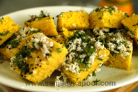

Khaman Dhokla
Ingredients
Gram flour (besan) sieved 2 cupsYogurt beaten 1 cup
Salt to taste
Turmeric powder 1/2 teaspoon
Green chilli-ginger paste 1 teaspoon
Oil 2 tablespoons
Lemon juice 1 tablespoon
Soda bicarbonate 1 teaspoon
Mustard seeds 1 teaspoon
Fresh coriander leaves chopped 2 tablespoons
Coconut scraped 1/2 cup
Method Preparation
Take gram flour in a bowl. Add yogurt and approximately one cup of warm water and mix. Avoid lumps. Add salt and mix again. Leave it aside to ferment for three to four hours. When gram flour mixture has fermented, add turmeric powder and green chilli-ginger paste. Mix Heat the steamer. Grease a thali. In a small bowl take lemon juice, soda bicarbonate, one teaspoon of oil and mix. Add it to the batter and whisk briskly. Pour batter into the greased thali and place it in the steamer. Cover with the lid and steam for ten minutes. When a little cool, cut into squares and keep in a serving bowl/plate. Heat remaining oil in a small pan. Add mustard seeds. When the seeds begin to crackle, remove and pour over the dhoklas. Serve, garnished with chopped coriander leaves and scraped coconut.